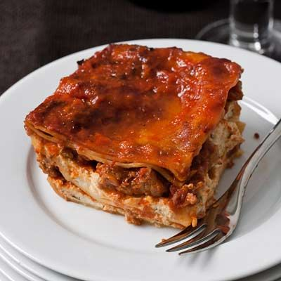

Grandma's Lasagna

Description
This lasagna harkens to the dinners of old, held in the bowels of
Sicilian villages. Not only will this lasagna evoke images of the rustic
Italian country side, it will also enthrall you to make a lasagna for all of
your loved ones as this feeling is not one to be experienced in solitude.
In all reality, this lasagna is pretty good. We call it Grandma's
Lasagna because everyone thinks their grandmother is the best thing to
happen to the culinary world since Gordan Puck. Jokes aside, if you have a
few hours and want to make a filling dinner follow below.
Ingredients
- 1/4 c extra-virgin olive oil
- 1/2 lb ground beef chuck
- 1/2 lb ground sirloin
- 4 tsp minced garlic
- 1/2 tsp dried oregano
- 1/4 tsp crushed red pepper
- 2 tbsp tomato paste
- 2 28-ounce cans Italian peeled tomatoes
- 1 28-ounce can tomato puree
- 2c chicken stock
- 2 bay leaves
- 6 thyme sprigs
- Pinch of sugar
- Salt and Pepper
- 1 1/2 lb sweet Italian sausage
- 2 lb fresh ricotta
- 1/4c finely chopped parsley
- 2 tbsp finely chopped basil
- 1/2 c freshly grated Parmesean cheese
- 1 lb packaged whole milk mozzarella
- 1 large egg
- 12 dried lasagna noodles
Steps
- In a large enameled cast-iron casserole, heat the olive oil until shimmering. Add the chuck and sirloin and cook over moderately high heat, breaking up the meat into large chunks, until no pink remains. Add the garlic, oregano and crushed red pepper and cook until fragrant. Stir in the tomato paste and cook until the meat is coated. Add the tomatoes and their juices and the tomato puree along with the chicken stock, bay leaves, thyme and sugar. Season with salt and pepper and bring to a boil. Simmer over moderate heat, stirring occasionally, until thickened and reduced to 8 cups, about 1 1/2 hours. Remove the bay leaves and thyme sprigs.
- Meanwhile, heat a large skillet. Add the sausage meat in large pieces and cook over moderately high heat until browned and just cooked through, about 10 minutes. Drain the sausage and break it into 1/2-inch pieces.
- In a large bowl, combine the ricotta with the parsley, basil and 1/4 cup of the Parmesan. Add two-thirds of the shredded mozzarella and season with salt and pepper. Beat in the egg.
- Cook the lasagna noodles in a large pot of boiling salted water, stirring occasionally, until al dente. Drain the noodles and rinse under cold water. Dry the noodles between layers of paper towels.
- Preheat the oven to 375°F. Spread 1 cup of the sauce in the bottom of a 9-by-13-inch glass baking dish. Line the dish with 4 overlapping noodles. Spread one-half of the ricotta mixture over the noodles, then top with one-half of the sausage, 1 1/2 cups of the sauce and another 4 noodles. Repeat the layering with the remaining ricotta, sausage and another 1 1/2 cups of sauce. Top with 4 noodles and cover with 1 1/2 cups of sauce. Toss the remaining 1 cup of mozzarella with the remaining 1/4 cup of Parmesan and sprinkle over the lasagna.
- Bake the lasagna for about 45 minutes, or until the top is golden and crisp around the edges and the filling is bubbling. Let the lasagna rest for 20 minutes before serving.
- Make Ahead: The lasagna can be prepared through Step 5 and refrigerated overnight, or it can be baked ahead and then reheated in a 325°F oven.